Folder Tracks¶
With the Folder Tracks feature, you collect a group of tracks into a folder, allowing to you work with them together as unit. The obvious advantage is to collapse the view so that related tracks, like your drum tracks, can be viewed as a single entity.
Folder Tracks also give you a convenient way to apply volume automation, so that you can do a fade across a number of tracks at the same time. Folder Tracks allow you to solo every track that is contained within it with a single click. You can also do basic editing across the included. Let's take a closer look.
Creating a Folder Track¶
To create a Folder Track, right-click the track name for any existing track and select Create a new Folder Track. The Folder Track appears below the original track.
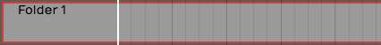
New Empty Folder Track
Alternatively, right click on the background of the Track section and choose Create a new Folder Track.
Either of these methods will create a new empty Folder Track. There are easy ways to create a Folder Track containing existing tracks, which we will cover that shortly.
Working with Folder Tracks¶
Putting Tracks into a Folder Track - To put a track into a Folder Track, simply grab the track by the track name, drag it, and drop it on the folder. Just before you drop it, the Folder Track will glow, usually with a red color, indicating it's ready to receive your track.
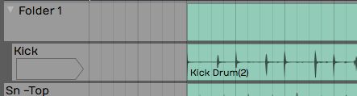
Folder Track after Dropping in One Track
If you already have some tracks in the folder you can drag it over the folder and then downward; You'll notice a red glowing insertion point, where you can put your track between other tracks to get the order you would like.
Naming a Folder Track - Naming a Folder Track works exactly like any other track. Click on the header part of the track where the name is, and then edit Name in properties. By default, it will have a name similar to Folder 1 or Folder 2.
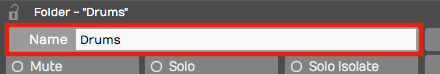
Naming a Folder Track
💡 Tip: One of the most common uses of Folder Tracks is to organize all of your drum parts into a single folder. In this case, you might want to name it 'Drums' or 'Drums Folder.'
Reorder Tracks within a Folder Track - To reorder the tracks within your Folder Track, grab any track and drag it to the correct position. The red insertion line shows the target, so you know exactly where the track is going to go. When you drag a track directly onto the Folder Track and drop it, that track goes to the topmost position.
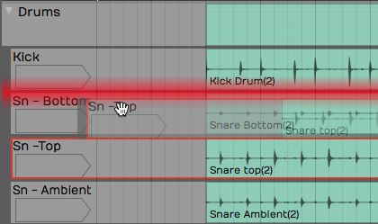
Reordering Tracks within a Folder
Collapsing and Expanding a Folder Track - Click the small triangle to the left of the Folder Track name to expand or collapse the folder. When the folder is collapsed it doesn't affect playback. All the tracks that are contained within the folder still play and respond as normal.
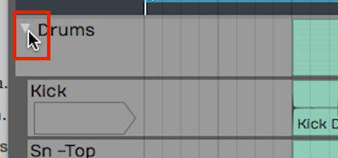
Expand/Collapse a Folder by Clicking the Triangle
Soloing/Muting a Folder Track - Folder Tracks have Solo and Mute buttons, just like any other track. However, they operate on all of the tracks that are contained in the folder. So if you have a Folder Track set up for your drums and you click Solo, you will solo all of your drum tracks. Likewise, Mute mutes all the tracks with in the folder
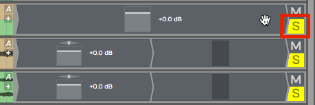
Folder Track Solo
📝 Note: When you solo a Folder Track, the tracks contained in it are soloed with a blinking Solo button. This indicates that the track is being soloed by the Folder Track and not directly. If you click the blinking Solo it will change to the standard solo state with a steady indicator.
The Solo and Mute functions are really good reasons to set up Folder Tracks for the different instrument types. You can set up Folder Tracks for drums, for guitars, for keyboards, and another for vocals.
The Folder Track VCA¶
VCA stands for "voltage controlled amplifier." For those of you with experience with analog gear, that name relates to a similar feature on automated mixing consoles. In essence, the VCA on the Folder Track remotely controls the level of all the included tracks proportionally. This gives you level control for the everything in the folder.

Folder Track VCA
Keep in mind that no audio passes through the Folder Track itself. The VCA acts as a remote control, proportionally controlling the volume of all of the individual Volume & Pan plugins of the tracks contained within the Folder Track. It's a very convenient way to add high-level mixing to your groups of instruments, without going through the complexity of adding numerous additional bus.
📝 Note: You can't insert plugins on Folder Tracks, since no audio actually passes through the track. To do so you would need to create a Submix Track, which we'll cover in the next chapter. # Creating a Folder Track with Existing Tracks
With multi-track drums, you often have 10 tracks or more that you need to put into a Folder Track. Rather than drag each track individually, there is a quick way to pack all of them into a Folder Track at once:
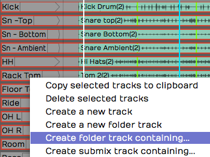
Create a Folder Track Contain Existing Tracks
- Select the first track by clicking on the track name. Hold down Shift and click on the last track. All of the drum tracks will then be highlighted.
- Next, right-click on the track name for any of the tracks and choose the option Create new folder track containing. This instantly creates a Folder Track containing all of your drum tracks.
- Finally, select on the Folder Track and give it a descriptive name in properties.
💡 Tip: This isn't limited to drum tracks. Create new folder track containing is a great way to create Folder Tracks for any related selection of instruments or vocals.
Editing With Folder Tracks¶
Folder Tracks get even cooler when you discover the editing possibilities. Here is a rundown of what's possible:
Splitting Contained Clips - To split clips across all of the contained tracks by simply selecting the Folder Track clip, position the cursor, then press Slash.
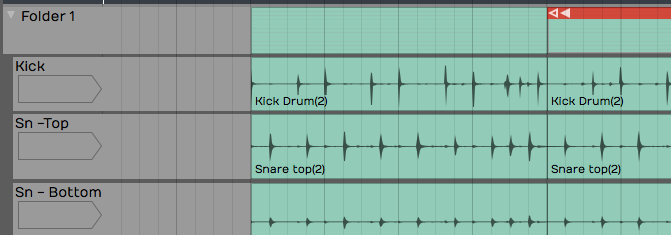
Split All Clips Within a Folder Track
Rearranging - After splitting the Folder Track clip, you can rearrange everything within the folder by dragging the Folder Track clips to any order. You can use this rearrange a song or just swap verse 1 and verse 2. If you put all your tracks in to a Folder Track you can use this for block arranging of the song.
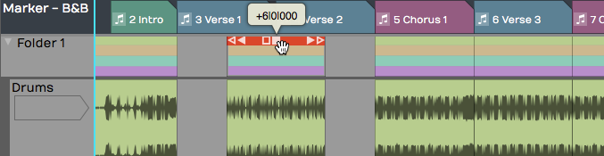
Rearranging Clips within a Folder Track
Trimming - The beginnings and the endings of the Folder Track clips have trim handles. Drag to trim all the included clips.
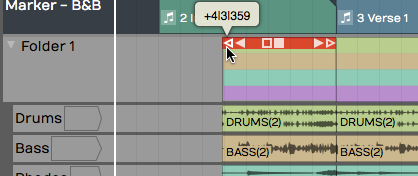
Trimming Using the Folder Track Clip
Deleting - In addition to moving and splitting clips, you can delete entire sections of the contained tracks by separating out a section, selecting it, and pressing Delete or Backspace.
Automating a Fade within a Folder Track¶
You can automate the VCA fader to create fade-outs or fade-ins on Folder Tracks. We'll get into more detail about automation in a later chapter, but here is a step by step recipe for creating fade-outs:
- Grab the little "A" icon. That is the automation icon for the track. Drag it and drop it on the VCA fader. A red line appears on the Folder Track. That is the automation curve for the VCA fader.
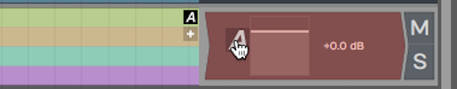
Activate Automation for the VCA
- Double-click on automation curve add points. Add two points: one before and one after the section you would like to fade.
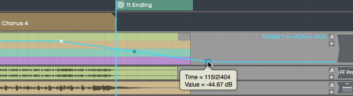
Add Automation Points to the VCA Curve
- Drag the last point all the way down to the bottom of the clip to draw in your fade-out.
- Between the two points you added, notice an additional point was automatically added. This is a curvature point. Drag the curvature point to adjust the shape of the fade.
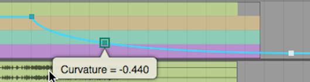
Customizing the Fade with Curvature**
You can further adjust the speed of the fade by dragging all these points until it sounds like what you want. The automation points snap to the current snap increment. Turn Snap off for finer adjustment.
This technique is really a time-saver because you don't have to go in and edit each individual clip in order to do a fade-out.
Moving On¶
Folder Tracks are a powerful feature in Waveform. You may have seen this concept in other digital audio workstations. Once you get the hang of how it works in Waveform, you will be amazed at the creative things you can do with Folder Tracks.